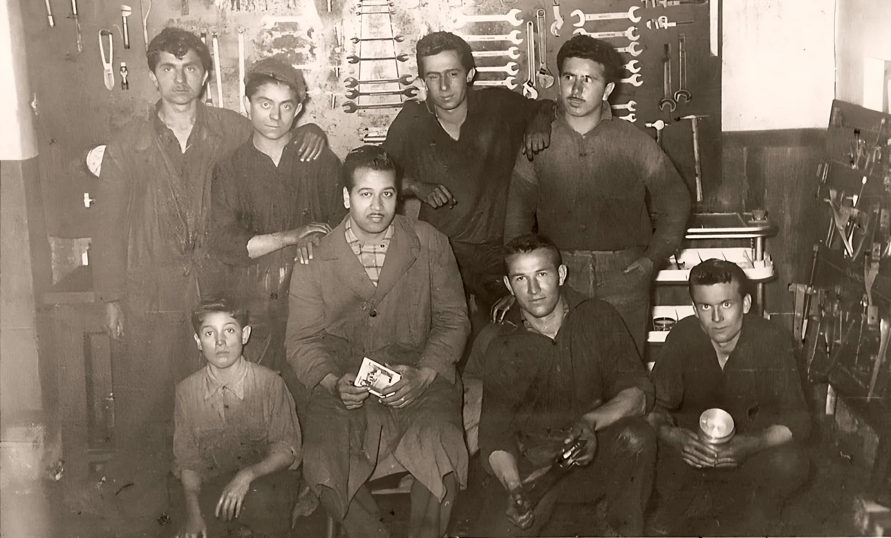
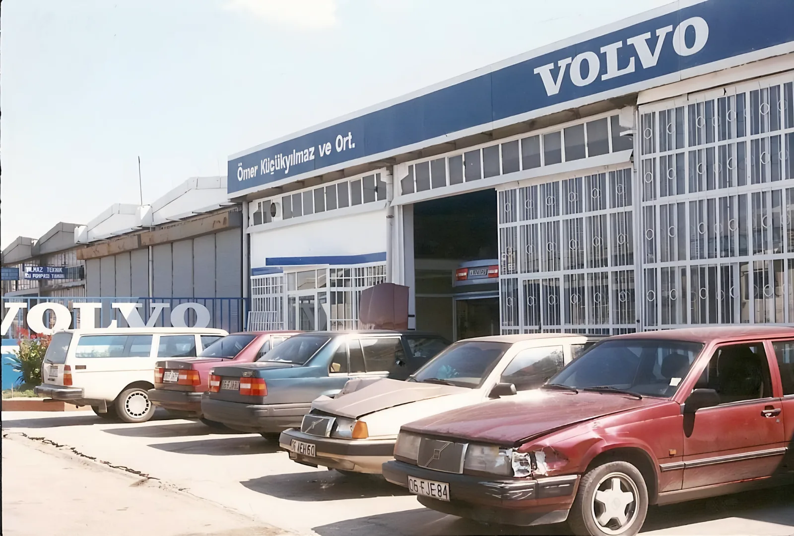

Hakkımızda
Volan 1954’te “Volan Küçükyılmaz” adıyla kuruldu ve uzun yıllar Volvo Yetkili Servisi olarak çalıştı. 2017’den beri Volan Otomotiv adıyla Volvo, Volkswagen ve Mercedes araçlara yetkili servis kalitesinde, özel servis esnekliğiyle bakıyoruz.


Tesis, birimler ve ekip
1.800 m² tesiste iki mekanik atölyesi, kaporta ve boya bölümü, hasar ve servis danışmanlığı aynı çatı altında çalışır. Teknik kadromuz alanında uzman ve sürekli eğitim alıyor.
- LiftMekanik 1 ve Mekanik 2
- 4
- Mekanik ustası
- 4
- Kaporta ve boya ustası
- 2
- Hasar danışmanıSigorta ve kasko dosyaları
- 1
- Servis danışmanıAracınızı teslim alır, size aktarır
- 3
Dalgalı çizgili sayılar eski siteden alındı; güncelliği teyit edilecek.
Sertifika ve uzmanlık belgeleri
Ustalarımızın eğitim ve uzmanlık belgeleri.
Belge bekleniyor
Belge bekleniyor
Belge bekleniyor
Belge bekleniyor
Volan Otomotiv’in hikâyesi
Üç fotoğraf, bir işletme.


1954’te “Volan Küçükyılmaz” adıyla kurulduk. Uzun yıllar Volvo Yetkili Servisi olarak çalıştık. 2017’den beri “Volan Otomotiv” adıyla, özel servis olarak hizmet veriyoruz.